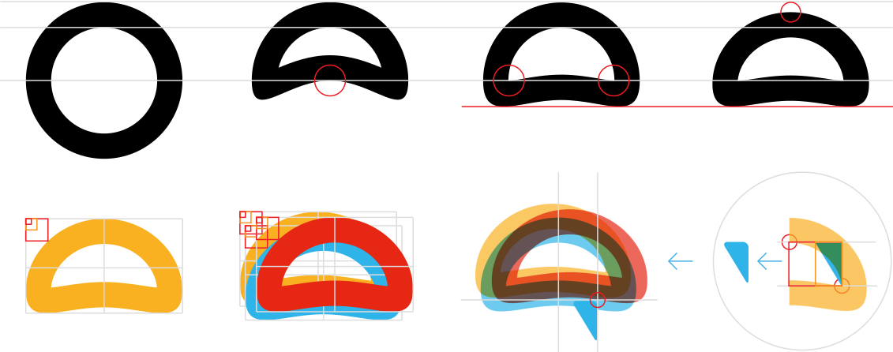
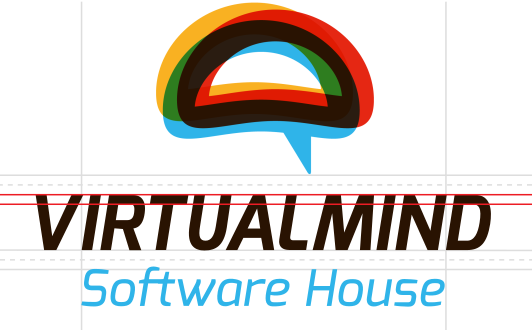
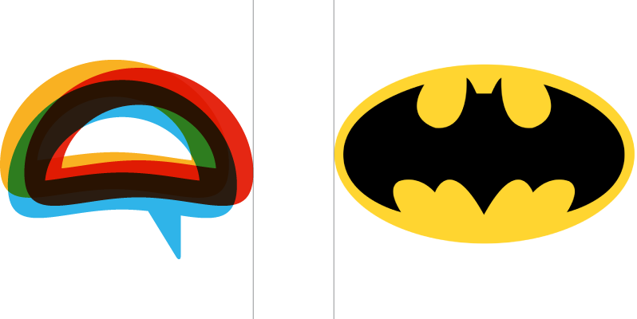

The "three-brain" logo concept is built around the principles that define our company:
It took around two months of exploration, back and forth, and many ideas. Once we landed on the "three-brain" concept, refinement and attention to detail shaped the brand into what it is today.


RGB 47 180 233
HEX #2FB4E9
RGB 249 177 34
HEX #F9B122
RGB 229 39 19
HEX #E52713
Use Pantone and CMYK for offset printing, and CMYK for everything else.
Pantone 298 U
CMYK 69 7 0 0
CMYK 63 73 70 88
Pantone 137 U
CMYK 0 35 90 0
CMYK 84 25 100 12
Pantone 1795 U
CMYK 0 94 100 0
Roboto has a dual nature. It has a mechanical skeleton and largely geometric forms, while its friendly, open curves make it feel approachable. Unlike some grotesques that distort letterforms to force a rigid rhythm, Roboto allows letters to settle into their natural width. This creates a more natural reading rhythm, commonly found in humanist and serif typefaces.
VIRTUALMIND
Exo was used as the foundation for our logo...
With a little reshaping.
Headings use a lighter Roboto weight
I see a little silhouetto of a man
Exo is also available for headings
Gallileo Figaro. Magnifico!
Body text uses Roboto
Is this the real life? Is this just fantasy? Caught in a landslide No escape from reality Open your eyes Look up to the skies and see I'm just a poor boy, I need no sympathy Because I'm easy come, easy go A little high, little low Anyway the wind blows, doesn't really matter to me, to me
The symbol may be used internally, preferably over an off-white background.
For internal use, the one-brain version may also be used. Prefer the Birdie Blue version whenever possible.

When placed next to other logos, clear space is a must.
In dark times, white is the answer.
Use the monochrome version only when color reproduction is not available.
White or black versions may be used on solid color backgrounds. Choose wisely.
The corner crop is one of our favorites, but it should be used as shown above.
For external materials, always include the wordmark.
Keep it straight.
Better on top. Oh, your filthy mind.
Mind the contrast.
Seriously. Contrast matters.
One word. One brand. Keep it together.
Avoid using the VM contraction as a standalone visual mark.
When using the logo with the tagline, make sure both remain readable.
Every time you stretch a logo, a designer cries somewhere. And probably a kitten, too.
Please don't do this. Ever.
Why did you think this was going to be a good idea?
I will look for you. I will find you. And I will kill you.
Let's face it: you'll be sending a lot of emails. Our signature gives your beautiful messages the perfect closing touch.
It comes in two flavors. Use the second one if your name and title become too long together.
Clark Kent Journalist
Virtualmind
www.virtualmind.com
North America
(305) 433-6438
2134 Rivadavia Ave. Fl 3 Ste B - Buenos Aires,
Argentina
ISO 9001 CERTIFIED / MICROSOFT PARTNER
Anthony Edward "Tony" Stark
Scientist & Philanthropist
Virtualmind
www.virtualmind.com
North America
(305) 433-6438
2134 Rivadavia Ave. Fl 3 Ste B - Buenos Aires,
Argentina
ISO 9001 CERTIFIED / MICROSOFT PARTNER
Copy the text above, go to your Gmail settings, open the General tab, find the Signature section, and paste it there.
Then enter your name and position, make sure the
"Insert this signature before..." option is checked, save your changes, and voilà.
If it doesn't look like the example above, say "designer" out loud three times and help will come.